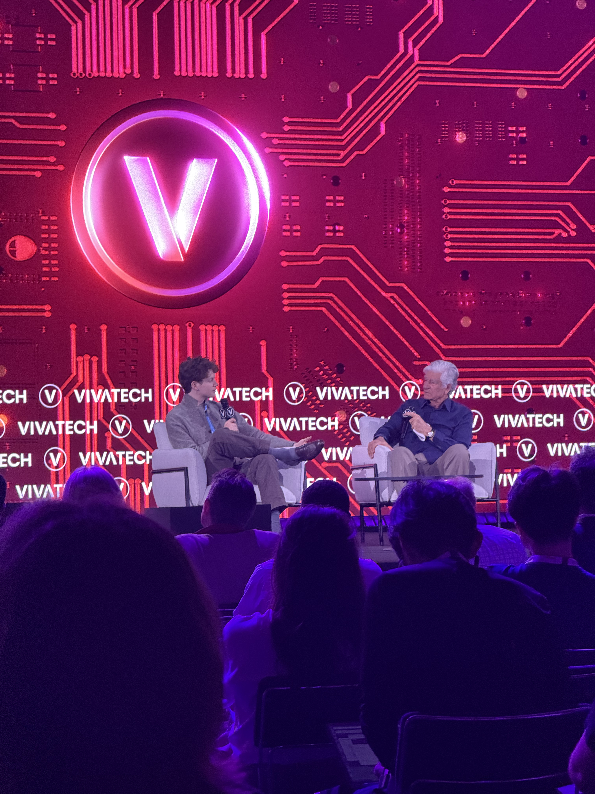
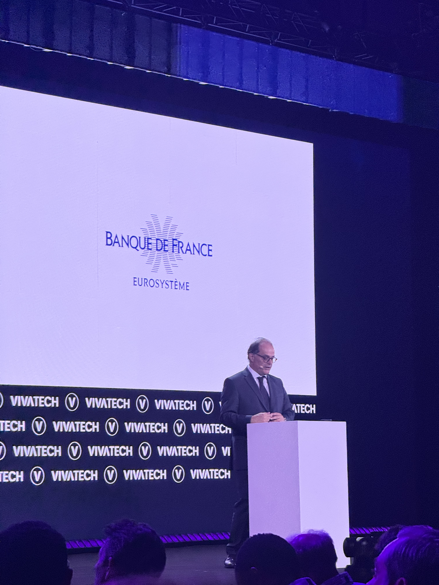
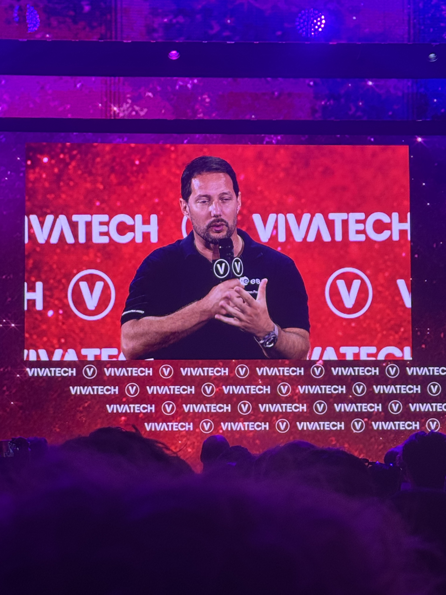

Last week, I had the opportunity to attend VivaTech Paris for the first time. As Europe's biggest tech event, the atmosphere at Paris Expo was incredibly innovative. Coming from a finance background, I was curious about discovering what innovations are made in other industries.
I spent most of the time attending conferences at the different stages and the theater.
Day one
I landed in Paris on June 18th in the morning, so I went to the event only in the afternoon. I briefly explored the different stages and barely saw President Macron.
Day two
On June 19th I started with a small conference at the Airbus stand about the future of aviation. The talk covered foldable wings, zeroE program which aims at doing electric flight without batteries but hydrogen, and lastly the implications of AI in the industry. The presentation showed us what the future of user flight experience could look like with for instance your seat screen recognizing you and recommending you things based on previous travel, movies watched… But it also helps for MRO (Maintenance, Repairs & Operations), like predicting a failure and early organizing the maintenance.

After that I attended a round table about the sovereignty (on European scale) of tech and AI. There was the former minister of AI and now French Ambassador to the EU Clara Chappaz, the CEO of ScaleWay and the COO of Proton. It was an interesting topic given that we currently see the U.S. restricting the access to some of their technology. They went through this new trend in Europe to build our own chips here to reduce dependency. The core idea was to see Europe as an important actor in the AI and tech world thanks to its regulation. While we often criticize EU regulations, they depicted another point of view. If you go to US tech products, you have no guarantee that you will have access to it at all times and that your data won't be sent to government or U.S. institutions. Europe brings that and we should capitalize on this to spread and sell our products to people that want safe and independent products.
After that talk, I joined the theater to attend the conference of Cameron Fink, co-founder of Aaru. He talked little about his company but more about his experience so far and our world today. There is one thing he mentioned that kept my attention. There is a popular trend among entrepreneurs (and not only) to trash universities as outdated and useless. Cameron Fink offered an interesting view of the matter saying: "if you don't know what you want to do, college/uni is the best place to go".

Then, Emmanuel Moulin, the new Governor of the Bank of France came to give a short speech about the
future of money and especially euros (€). His view is that we are going to have digitalization of
traditional fiat currency. It will bring two changes to the payment system: the use of cash will (and has
already started to) decrease, and the digitalization of financial assets will take place. Tokenization in
the institution is seen as the next step in monetary markets. This implies that no intermediary will be
involved, which will significantly reduce costs. However, this comes with some risks. A main one is the risk
of dependency to a no-€ system.
The Bank of France sees itself as a catalyst, not a substitute. Bank deposits need to enter the digital
world. In a nutshell: "the future of the euro is in code".

Last day
The main event of the last day was the conference of Thomas Pesquet, a French astronaut (spationaut in
French ahah). Several topics came out, the first one was about his first extravehicular activity, the first
liftoff, and also the challenges to go to Mars.
To him, the main challenge about going far beyond the Earth orbit (like lunar missions) is about the time it
takes. Pesquet explained a mission to Mars takes about 300 days to get there, 300 days on-site, and 300
days to return. Spending that much time so far seems more like a psychological issue at this point. He
explained the importance of travelling faster.
